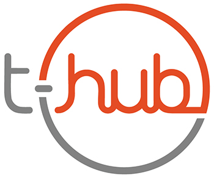
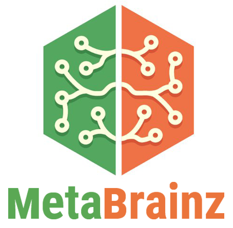

|
Pinkesh Badjatiya
pinkeshbadjatiya [at] gmail [dot] com |
+91-720-774-6433
Resume |
Biography |
Google Scholar |
LinkedIn |
Github
I am currently working with MDSR Lab as a Machine Learning Research and Development Engineer at Adobe, where I mainly focus on Computer Vision and Reinforcement Learning.
I am interested in artificial intelligence, natural language processing, machine learning and computer vision. Much of my research is in Deep Reinforcement Learning (deep-RL), Natural Language Processing (NLP) and training Deep Neural Networks to solve complex social problems. I am also interested in bringing these recent developments in AI to production systems.
|
|
|
|
Software Development Engineer
June 2019 - Current
Adobe
I primarilly work with Reinforcement Learning and Computer Vision. I also work on building ML algorithms for production.
|
|
|
Machine Learning Research Intern
Jan 2019 - April 2019 (4 months)
Adobe
Working towards solving social dilemmas using cooperation for Multi-agent setting using Deep Reinforcement Learning using Model-based Value functions.
|
|
|
Software Engineer Intern
May 2018 - July 2018 (3 months)
Goldman Sachs
Designed an algorithmic solution using constraint optimization in java and scala. Used TDD with OOP concepts and Design patterns.
Performed error analysis and deployed to production.
|
|

|
Data Analytics/Site Reliability Engineer Intern
Sep 2017 - Mar 2018 (7 months)
T-Hub Homepage
Developed analytics from the reports produced by ~280 co-working startups incubated at T-Hub.
Analyzed the user traffic flows to improve the site experience and generate weekly statistics for internal-analysis using Google Analytics and Python
|
|

|
Google Code-In Mentor
Nov 2016 - Jan 2017 (3 months)
Google Code-In /
MetaBrainz Homepage
Mentored students working on the ListenBrainz project. Tasks involved creating tasks of varying difficulty levels and evaluating their submissions.
|
|
|
System Administrator and Organizer
Jul 2016 - Jun 2017 (11 months)
Felicity Website
Felicity Threads is the annual technical fest of IIIT Hyderabad. I was part of the team responsible for maintaing the contest portals and the website for the fest. I was also a problem setter for the event Break-In CTF and
|
|
|
Google Summer Of Code (GSoC) Intern
April 2016 - August 2016 (4 months)
Google Summer of Code /
Blog@MetaBrainz
Created a proxy submission Flask API compatible with Last.fm scrobblers.
Added scrobbling support for desktop clients with support for tracking currently playing song in Redis.
|
|
Research
I'm interested in computer vision, machine learning, optimization, and image processing. Much of my research is about solving challenging problems that has significant impact. Representative papers are highlighted.
|
Inducing Cooperative behaviour in Sequential-Social dilemmas through Multi-Agent Reinforcement Learning using Status-Quo Loss
Pinkesh Badjatiya,
Mausoom Sarkar,
Abhishek Sinha,
Siddharth Singh,
Nikaash Puri,
Jayakumar Subramanian,
Balaji Krishnamurthy
Under Review
Accepted as Extended Abstract in AAMAS 2020
paper
|
Multi-label Categorization of Accounts of Sexism using a Neural Framework
Pulkit Parikh,
Harika Abburi,
Pinkesh Badjatiya,
Radhika Krishnan,
Niyati Chhaya,
Manish Gupta,
Vasudeva Varma
Conference on Empirical Methods in Natural Language Processing (EMNLP), 2019
paper
|
Stereotypical bias removal for hate speech detection task using knowledge-based generalizationss
Pinkesh Badjatiya,
Manish Gupta,
Vasudeva Varma
The Web Conference (TheWebConf), 2019
paper
|
Attention-based neural text segmentation
Pinkesh Badjatiya,
Litton J Kurisinkel,
Manish Gupta,
Vasudeva Varma
European Conference on Information Retrieval (ECIR), 2018
paper
|
Deep learning for hate speech detection in tweets
Pinkesh Badjatiya*,
Shashank Gupta*,
Manish Gupta,
Vasudeva Varma
(* equal contribution)
International Conference on World Wide Web Companion (WWW), 2017
paper /
Media Coverage
|
Website template borrowed from here.
If you wish to use my version of the template, please provide credits.
|
|
{kind=link}